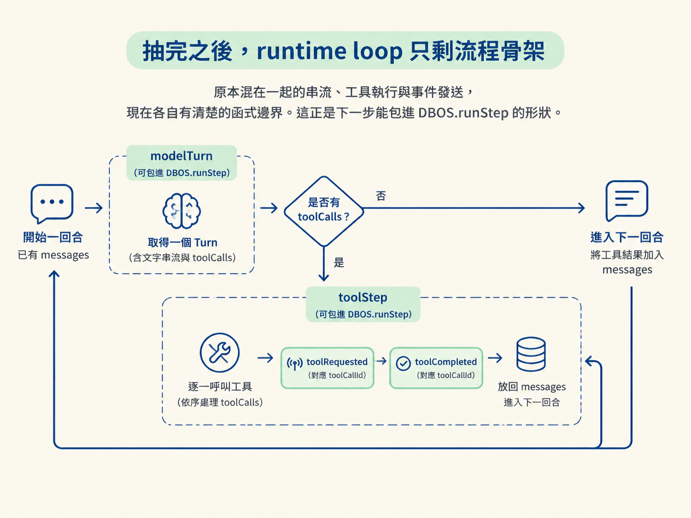

上一課已經把工具執行收回自己手上，也畫好了 step 邊界。現在的 runtime loop 仍然把幾件事揉在一起：呼叫模型、串流文字、收集工具呼叫、執行工具，最後再把結果塞回訊息。
這種寫法一開始跑得動，但很難精準地交給 DBOS.runStep。因為 runStep 需要一段有清楚邊界的程式碼，才能單獨持久化與重試。
所以這一步不是重寫，而是只搬程式碼的位置，不改任何行為：把一次模型回合抽成 modelTurn，把一次工具執行抽成 toolStep。每段副作用都有自己的名字，之後才能各自包進 durable step。
modelTurn：一次模型呼叫的完整產物modelTurn 負責兩件事：把模型產生的文字即時送出去，以及在串流結束後整理出工具呼叫與 response。
async function modelTurn(workflowId: string, messages: Message[]) {
const result = streamText({ model, messages, tools });
for await (const chunk of result.fullStream) {
if (chunk.type === "text-delta") {
emit({ type: "modelDelta", text: chunk.textDelta, workflowId });
}
}
const toolCalls = (await result.toolCalls).map((call) => ({
toolCallId: call.toolCallId,
toolName: call.toolName,
inputs: call.input,
}));
const response = { messages: await result.response.messages };
return { text: "", toolCalls, response };
}這個函式可以拆成三個動作：
result.fullStream。每遇到一個 text-delta，就 emit 一個 modelDelta，瀏覽器便能即時顯示文字。result.toolCalls，把模型的結果轉成只包含 toolCallId、toolName、inputs 的乾淨物件。result.response.messages，與 toolCalls 一起包成 Turn 回傳。workflowId 也跟著傳入函式，並放進事件裡。這樣 event log 的每一條事件都能追溯到所屬的 workflow；之後重播或除錯時，就能把同一回合的事件放在一起看。
toolStep：一次工具呼叫的完整產物toolStep 則把單次工具執行包起來。它在執行前發出請求事件，執行完成後再發出結果事件：
async function toolStep(workflowId: string, call: ToolCall) {
emit({
type: "toolRequested",
toolCallId: call.toolCallId,
toolName: call.toolName,
inputs: call.inputs,
workflowId,
});
const output = await runTool(call.toolName, call.inputs);
emit({
type: "toolCompleted",
toolCallId: call.toolCallId,
output,
workflowId,
});
return output;
}這裡最重要的是 toolCallId 的對應關係：
toolRequested 記錄模型要求執行哪個工具，以及使用哪些參數。toolCompleted 使用同一個 toolCallId，記錄工具最後產生的結果。有了這個關聯鍵，inspector 就能把「模型請求了什麼」和「工具回傳了什麼」精確接起來。這也是工具執行能被觀察、重播的基礎。
這套 request → execute → completed 的事件契約，之後也能套用在不同工具上：不論是查資料庫、發送訊息，還是執行沙箱程式，都使用同樣的事件形狀。
現在 runtime loop 的責任變得很單純：
modelTurn，取得這一回合的 Turn。Turn 有 toolCalls，就逐個呼叫 toolStep。messages，再進入下一回合。原本混在一起的串流、工具執行與事件發送，現在各自有清楚的函式邊界。這正是下一步能包進 DBOS.runStep 的形狀。

不過目前它們仍然只是普通函式：程式重跑時，模型呼叫與工具執行仍會重跑；遇到 crash，也還沒有持久化保護。下一課會把這兩個函式真正交給 DBOS.runStep，讓 step 的結果可以被保存與重用。